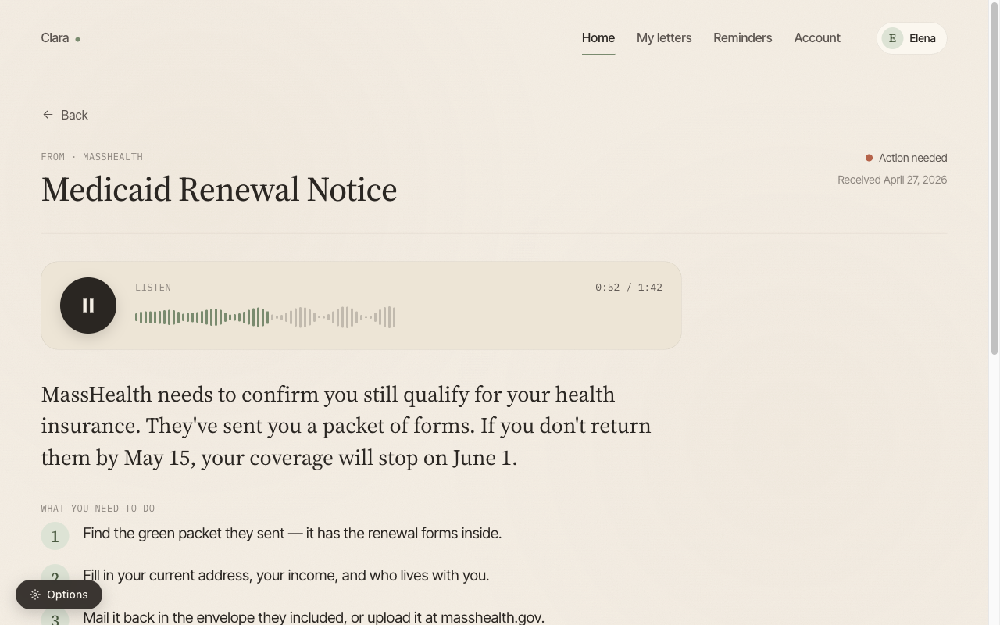
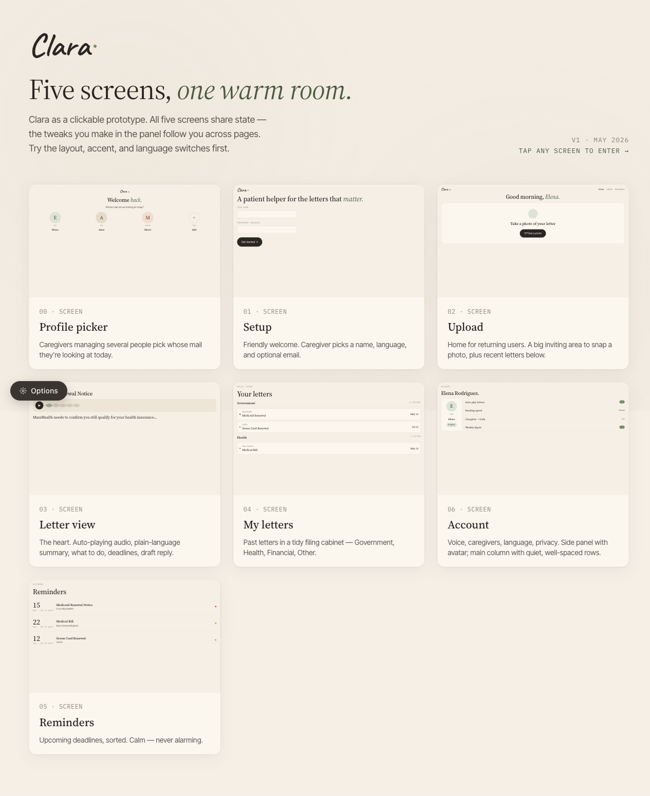

Clara is a prototype I built to make dense official mail readable. Government, health, and financial letters go in as a photo; Claude classifies each one, rewrites it in plain language, reads it aloud, and pulls out the deadlines and the exact steps to take. It is built for caregivers handling mail for someone else, so every screen stays calm, large, and in the reader's own language.
Official mail is written for the institution that sends it, not the person who has to act on it.
A benefits renewal, an insurance statement, a bank notice. Each one is written in the language of the organization that sent it, and each one hides the two things the reader actually needs: what this means, and what happens if I do nothing. Miss the date buried in the third paragraph and you lose a benefit or pay a penalty.
Clara takes a photo of the letter and answers those two questions first. Claude classifies it, rewrites it in plain language, reads it aloud, and pulls the deadlines out into a list you can act on. The letter stays available underneath if you want it, but you no longer have to start there.
Two readers, one screen. The person the mail is addressed to, and whoever helps them open it.
The people most likely to be handed dense government, health, and financial mail, and least well served by how it is written. Clara reads it out in their own language, at a size they can see.
A caregiver can photograph a parent's mail and know within seconds whether it needs attention today, next week, or not at all. That is the whole job most of the time.
The deadline is the part that costs you. Clara extracts it, says what happens if it passes, and can turn it into a reminder.
The core screen: a scanned notice becomes a spoken summary, a plain-language explanation, and a numbered list of what to do next.

Four steps from a photograph to a decision.
A photo or a PDF. Nothing to type in.
It decides whether the letter is government, health, or financial, then pulls out the sender, the amounts, and any case or claim numbers.
A plain-language summary of what the letter actually says, spoken back through ElevenLabs in the reader's own language.
Each date, what it is for, and what happens if it passes. They collect on a reminders screen instead of staying buried in the page.
Profile picker, setup, upload, the letter, a filing cabinet of past mail, reminders, and account. The layout, accent, and language switches follow you across every page.

Under the hood. Next.js and React with TypeScript. Claude does the classification and the plain-language rewrite, ElevenLabs speaks the summary out loud, and everything is kept in a local SQLite file, so it runs on one machine as it stands.
Clara is a prototype, not a production system.
Letters you photograph are sent to Claude to be read and to ElevenLabs to be spoken. None of the hardening a production system needs, audit trails, retention rules, regulated-data handling, exists here yet. Treat it as a demo: real pipeline, real design, not yet a home for anyone's real mail.
An MIT hackathon, one sitting, under two hours. Still being taken further from there.
Clara started at an MIT hackathon run by the Claude Builders Club, sponsored by Anthropic and Jane Street. The idea came from a simple observation: the people who most need help with dense official mail are the least served by how that mail is written.
The whole thing went in inside two hours, in one sitting. It is useful today, but there is lots of work to be done: it keeps everything in a local SQLite file, so as it stands it runs on one machine. Expect rough edges. The source is on GitHub.